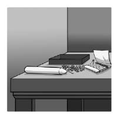

Ceza ve ödül sistemi külliyen kötü değildir. Kötü olsaydı Motivasyon 2.0 işletim sistemi asla böylesine gelişemez ve bu derece başarılı olamazdı. Ödül ve ceza kavramlarına odaklanmış bir işletim sistemi yararlı ömrünü doldurmuş ve çok ciddi bir yükseltme ister duruma gelmiş olsa bile, o işletim sisteminin bütününü hurdaya çıkarmamız gerekmez. Böyle bir şey yapmak, bilime aykırı hareket etmek olur. İnsan motivasyonunu araştıran bilim adamları, geleneksel yaklaşımdaki birçok hatalı yanı bulmakla kalmadılar, aynı zamanda ödül ve ceza sisteminin, kendisinden beklenenleri gayet makul düzeyde karşıladığı dar kapsamlı durumları da saptadılar.
Başlangıç noktası elbette temel ödülleri yani maaşlar, ikramiyeler, vs.yi adil ve yeterli oranda vermekten geçiyor. Temel ödüllerde hakkaniyet olmadığında her türlü motivasyon çabası zorlanacak ve çok zaman başarısız olacaktır.
Ancak bir kere bunu oturttunuz mu harici motivasyon unsurlarına dayanarak başarılı olabileceğiniz bazı koşullar da söz konusudur. Bu koşulların neler olduğunu anlamak için mum problemine geri dönelim. Yaptığı araştırmada Sam Glucksberg, nakit para ödülü vaat edilen deneklerin, ödül vaat edilmeyen deneklere göre problemi çözmek için daha uzun zaman harcadığını belirledi. Hatırlayacağınız gibi bunun nedeni, ödül düşüncesinin deneklerin odaklarını daraltıp yenilikçi, bir çırpıda görülmeyen bir çözüme ulaşma yeteneklerini sınırlamasıydı.
Aynı deneyi Glucksberg, farklı deneklerle ve biraz farklı bir şekilde bir kere daha yaptı. Bu seferde de deneklerin yarısına sadece veri toplamak amacıyla performanslarını ölçeceğini söylerken diğer yarısına da en hızlı bitirenlerin nakit parayla ödüllendirileceğini belirtti. Ama deneydeki unsurları biraz değiştirdi. Deneklere bir kutu dolusu raptiye vermek yerine raptiyeleri resimdeki gibi masaya boşalttı.

Farklı hazırlanan mum problemi deneyi
Bilin bakalım ne oldu? Bu sefer ödül almak isteyen denekler, problemi öteki deneklerden daha hızlı çözdü. Sebep? Raptiyeleri ayırıp boş kutuyu gösteren Glucksberg, temel olarak çözümü de göstermiş oldu. Zorlu bir sağ beyin işini rutin bir sol beyin işine dönüştürdü. Deneklerin takip edecekleri yol çok açıktı. Bitiş çizgisinde onları bekleyen havuç, daha hızlı davranmalarını sağlamıştı.
Glucksberg'in deneyi, harici motivasyon unsurlarını düşündüğünüzde sormanız gereken ilk soruyu veriyor bize: Yapılan iş rutin bir iş mi? Yani o işi yapmak, belli bir amaca hizmet eden, daha evvelden belirlenmiş bir dizi kuralı uygulamayı gerektiriyor mu?
İlginçlik arz etmeyen, fazla bir yaratıcı düşünme istemeyen rutin görevler için ödüller, zararlı yan etkiler yaratmadan küçük bir miktar motivasyon sağlayabilirler. Bazı durumlarda bu sadece sağduyu olarak çıkar karşımıza. Edward Deci, Richard Ryan ve Richard Koestner'in de kaydettiği gibi "Ödüller insanların sıkıcı işlerle ilgili içsel motivasyonlarını azaltmaz çünkü azaltılacak bir içsel motivasyon ya çok azdır ya hiç yoktur"[44] Keza, Dan Ariely ile meslektaşlarının Hindistan'da bir grup MIT öğrencisi ile yaptıkları performans araştırmasında görüldü ki yapılacak iş "ilkel düzeyde bilişsel beceri" gerektirdiğinde teklif edilen daha büyük çaplı bir ödül, "daha düşük performans" alınmasına yol açıyor. Ama "yapılacak iş sadece mekanik becerileri gerektiriyorsa o takdirde ödüller, istendiği şekilde işe yarıyor, verilen ödül ne kadar büyükse alınan performans da o kadar çok oluyor".[45]
Bu nokta çok önemli. Her ne kadar gelişmiş ekonomiler artık o algoritmik, kural bazlı fonksiyonlara daha az başvuruyorlarsa da her gün, özellikle de işyerinde yaptığımız bazı şeyler hâlâ hiç de ilginç değil. Doldurmamız gereken TPS raporları, cevaplanması gereken e-postalar, ruhumuzu ateşlemekten uzak her türlü sıkıcı iş bizi bekliyor. Daha da fenası bazılarımız için tüm gün yaptıkları iş bu rutin, hiç mi hiç çekiciliği olmayan rutin görevlerden ibaret. Böylesi durumlarda işi oyuna dönüştürmek suretiyle Sawyer Etkisi'nin pozitif yönünü harekete geçirmek en iyisi. İşi oyuna dönüştürmek için ise yapılan görevin çeşitliliğini artırmak, işten çok bir oyuna benzemesini sağlamak veya ondan diğer becerilerde ustalaşmakta faydalanmak sonuç verebilir. Ama maalesef bu her zaman mümkün değildir. Bazen bu nedenle şartlı ödüller bir seçenek haline gelebiliyor.
Haydi şimdi gelin ödüllerle ve rutin işlerle ilgili bu bilgilerimizi pratiğe dökelim. Diyelim ki kâr amacı olmayan küçük bir dernekte yöneticisiniz. Tasarım ekibiniz, grubunuzun bir sonraki büyük etkinliği için acayip güzel bir afiş hazırlamış. Şimdi bu afişi, derneğinizin yirmi bin üyesine yollamak durumundasınız. Bu işi dışkaynak kullanımı yoluyla profesyonel bir gönderim şirketine havale etmek bütçenizi çok zorlayacak. O nedenle işi kendiniz yapmak üzere kolları sıvıyorsunuz. Sorun şu ki afişler matbaadan çok geç geldi ve hepsinin bu hafta sonu postaya verilmiş olması lazım.
Ekibiniz on kişilik. Haydi yardım edecek birkaç kişi daha buldunuz diyelim. Hafta sonu bu delice afiş yollama olayına bu insanların katkısını nasıl sağlarsınız? Görev, rutinin de rutini. İnsanlar afişleri rulo yapacak, postaya vermek üzere karton silindir kutulara koyacak, kutuların kapaklarını kapatacak ve üzerine bir adres etiketi yapıştırıp bir de pul konduracak. Dört adımlık, hiçbiri de ilginç olmayan bir iş.
Yönetsel seçeneklerden biri baskı yapmak. Patron sizseniz insanları Cumartesi ve Pazar günü bu sürmenaj edici işte çalışmaya zorlayabilirsiniz. Çalışmaya razı olabilirler ama morallerine ve derneğinize uzun erimli bağlılıklarına vereceğiniz zarar büyük olabilir. Bir başka seçenek de gönüllü olmalarını istemektir. Gelgelelim çoğu kişi hafta sonunu daha hoş bir şekilde geçirmeyi isteyecektir.
O halde böyle bir durumda şartlı ödül seçeneği etkili olabilir. Mesela, herkes bu projeye dahil olursa büyük bir ofis partisi düzenleyeceğinizin sözünü verebilirsiniz. Katılan herkese bir hediye çeki verebilirsiniz. Veya daha da ileri giderek çalışanlara kutulara koyup kapatıp gönderdikleri afiş adedi başına küçük bir miktar ödeme yapabilir, parça başına ödeme yönteminin verimliliği artırmasını umabilirsiniz.
Bu tarz somut ve şartlı ödüller içsel motivasyon ve yaratıcılığı çok zaman boğsa da bu durum böyle bir senaryoda daha az önem taşımaktadır. Yapılması gereken iş ne derin bir tutkuya ilham olabilir ne de derin bir düşünme süreci gerektirir. Ödül, incitmediği gibi yardım da edebilir bu durumda. Ayrıca şu üç önemli noktayı uygulamaya koyarak başarınızı artırmanız da mümkündür:
• O işin neden yapılması gerektiğine dair bir gerekçe belirtin. Özünde bir ilginçlik taşımayan bir iş, önemli bir amaca hizmet ediyorsa daha anlamlı olabilir. Böylece o iş, daha büyük bir şevkle yapılabilir. Bu afişin neden önemli olduğunu, derneğinizin hedeflerinin başarılmasında nasıl büyük bir rol üstlendiğini açıklayın çalışanlarınıza.
• İşin sıkıcı olduğunu itiraf edin. Empati kurmaya çalıştığınızı gösterin. Böylece, şartlı ödüllerin kurumunuzun çalışma yöntemleri arasında neden nadiren yer aldığını insanlara anlatmış olursunuz.
• İnsanlara işlerini kendi bildikleri gibi yapma fırsatı tanıyın. Kontrolü bırakın, insanlara bağımsızlık tanıyın. Nasıl bir sonuca ihtiyaç duyduğunuzu izah edin ama o sonuca nasıl ulaşacaklarını net bir çerçevede anlatmayın. Afişlerin nasıl rulo yapılacağını, etiketlerin nasıl yapıştırılacağını anlatmak yerine insanlara işlerini yapma özgürlüğü verin.
Rutin işlerle ilgili yaklaşım böyle olmalıdır. Peki diğer işlerde ne yapmalı?
Bir dizi talimattan oluşan bir merdivene tırmanmaktan daha fazlasını isteyen işlerde ödüller tehlikeli olabilir. Harici motivasyon unsurlarının yedi ölümcül hatasından kaçınmanın en iyi yolu onlardan ya tamamen uzak durmak ya da bu unsurlara verdiğiniz önemi ciddi oranda azaltıp onun yerine bu kitabın ilerleyen bölümlerinde ele alacağımız özerklik, ustalık ve amaç gibi daha derin motivasyon elementlerini vurgulamaktır. Ama işyerlerinde bu yaklaşıma sıkı sıkıya yapışmak, hayatın bir gerçeği ile yüzleşmenize yol açar: Harika, yaratıcı işleri olan, sağ beyinlerini kullanarak çalışanlar bile kendilerine ücret ödenmesini ister. Bu noktada, ödülleri hayatın gerçekleriyle örtüşecek ama bir yandan da harici motivasyon unsurlarının saklı maliyetlerini azaltacak şekilde kullanmanın yollarını bize Teresa Amabile gösteriyor.
Amabile ve iki meslektaşının, bir grup ressamın sipariş üstüne ve kendi istedikleri şekilde yaptıkları resimlerin kalitelerini karşılaştırdıkları araştırmaya geri dönelim. Uzmanlardan oluşan ve araştırmacıların nasıl bir konu üzerinde çalıştıklarından habersiz olan bir kurul, ressamların kendi istedikleri şekilde yaptıkları resimlerin daha yaratıcı olduğunu düşünüyordu. Bunun sebeplerinden biri, bazı ressamların, aldıkları ücretleri "kısıtlayıcı" bulduklarını söylemesiydi. Benimsemedikleri bir hedefe yönelik bir resmi, kontrol edemedikleri bir süreç içerisinde yapıyorlardı. Ancak aynı araştırmada Amabile bir keşif daha yaptı. Ressamlar, kendilerine ödenen ücretin "teşvik edici" olduğunu düşündüklerinde, yani "ödenen ücret, ressamın ilginç veya heyecan verici bir şey yapmasını teşvik ediyorsa"[46] yaratıcılık düzeyleri yeniden yükseliyordu. Ressamlar için aynı durum, kendilerine verilen ücretlere yararlı bilgilerin ve yeteneklerine dair geribildirimlerin eşlik ettiğini hissettiklerinde de geçerliydi.
Araştırma çok önemli bir noktayı ortaya çıkarmıştı. Rutin olmayan, daha yaratıcı işlerde çalışanlara, olumsuz etkiler yaratmadan ödül vermek, biraz alengirli bir çaba gerektirse de mümkündü.
Haydi şimdi derneğinize dokuz ay sonra geri döndüğümüzü varsayalım. Postalama işi mükemmel şekilde tamamlandı. Afiş çok beğenildi. Etkinlik çok ses getirdi. Bu sene bir başka etkinlik planlıyorsunuz. Tarihi kesinleştirdiğiniz ve mekanı da buldunuz. Şimdi insanların hayal gücüne hitap edecek, kalabalıkları etkinliğinize çekecek, etkileyici bir afişe ihtiyacınız var.
Ne yapmanız gerekir?
İşte size ne yapmamanız gerektiği: Tasarım ekibinize bir şartlı ödül teklif edin. Odalarına dalıp şöyle demeyin: "Bana dünyamı şaşırtacak veya geçen senekinden daha fazla kişiyi çekecek bir afiş yaparsanız yüzde on bonus alacaksınız." Her ne kadar bu tür bir motivasyon yaklaşımı dünyanın her yerindeki şirketlerde yaygınlıkla görülse de aslında performansı azaltan bir faktördür. Bir afiş hazırlamak, rutin bir iş değildir. Kavramsal, sıra dışı, sanatsal düşünmeyi gerektirir. Daha önce de gördüğümüz gibi şartlı ödüller, bu tür düşünmeyi baltalamanın süper bir yoludur.
Benimseyebileceğiniz en iyi yaklaşım, gerçek anlamda motive edici bir ortamı daha önceden yaratmış olmaktır. Temel nitelikteki ödüller yeterlidir. Daha açık bir ifadeyle, ekibin temel maaşı kafi ve adil olmalıdır. Özellikle de benzer kurumlarda aynı işleri yapan kişilerinki ile kıyaslandığında. Derneğiniz, çalışmak için güzel, hoş bir yer olmalıdır. Ekibinizdeki kişilere bağımsızlıklarını tanımalısınız. Ustalaşmak anlamında geniş olanaklara sahip olmalılar. Günlük işleri, daha büyük ve anlamlı bir amaca hizmet etmeli. Bu unsurlar mevcutsa en iyi strateji, ekibinizde konuyla ilgili olarak bir anlam ve önem duygusu yaratmalı ve sonra yeteneklerin önünden çekilmelisiniz.
Ama ödülleri incelikli bir şekilde kullanarak performansı hâlâ bir miktar artırma imkanınız olabilir. Bu iş için değil ama gelecekteki işler için. Çok dikkatli olun ama. Ortaya koyduğunuz ödüller temel bir şartı karşılamaktan uzaksa o takdirde çabalarınızın geri tepme ihtimali söz konusu. İki ilave ilkeyi de takip ederseniz daha sağlam bir zeminde yol alıyor olursunuz:
Temel şart: Her türlü harici ödül beklenmedik olmalı ve kesinlikle işin bitiminden sonra verilmelidir.
Bir projenin başında, üstelik şartlı olarak bir ödül lafı telaffuz etmek, insanların soruna odaklanmak yerine ödülü almaya yoğunlaşmaları sonucunu doğurur. İş bitiminden sonra ödüllendirmek daha az risklidir.
Başka bir ifadeyle, şartlı ödüllerin hata olduğu yerde, sürpriz ödüllere yönelmelisiniz. Örnek: "Artık afişi bitirdiğinize ve çok başarılı bir iş çıkardığınıza göre haydi bakalım, sizi bu akşam yemeğe davet ediyorum."
Deci ve meslektaşlarının da açıkladığı gibi "Somut ödüller, insanların bir işi bitirmesinden sonra sürpriz bir şekilde verilirse, ödüllerin iş yaptırmak amacıyla verildiği görüşünün doğma olasılığı azalırken içsel motivasyonda düşüş yaşanmasına da engel olunabilir."[47]
Amabile de bazı araştırmalarında, "yaratıcılık düzeyi en yüksek kişilerin, kendilerine ödülleri bir bonus niteliğinde verilenler olduğunu" bulmuştu.[48] Afişin başarılı olduğunu gördüğünüzde tasarım ekibinize bir kasa bira alabilir, hatta yaratıcılıklarını zedelemeden ellerine nakit bir para bile verebilirsiniz. Ekip, bir bonus beklentisi içinde değildir ve bonus almak da belli bir gerekçeye dayandırılmak zorunda değildir. Yaptıkları parlak iş nedeniyle onlara takdirlerinizi sunuyorsunuz, hepsi bu. Yalnız şu önemli uyarıyı sakın aklınızdan çıkarmayın: Tekrarlanan sürpriz bonuslar kısa sürede şartlı takdirlere dönüşebilir ve bu da sonuç olarak yüksek performansları yerlere serebilir.
Bu noktada rutin olmayan, yaratıcı işler için vereceğiniz ödülleri beklenmedik şekilde vererek daha güvenli sulara yelken açmış olursunuz. Ama şu iki kuralı da uygularsanız o takdirde daha da başarılı olursunuz.
İlki, somut, elle tutulur olmayan ödüller vermektir. Takdir ve pozitif geribildirim, nakit paradan ve somut ödüllerden daha az yıpratıcıdır. Aslında Deci'nin orijinal deneylerinde ve diğer çalışmalara dönük analizlerinde gördüğü gibi "pozitif geribildirim, içsel motivasyon üzerinde güçlendirici bir etki yapabilir".[49] Tasarım ekibindeki elemanlar, çarpıcı bir iş yaratmışlarsa odalarına girip sadece şunu demeniz yeterli olabilir: "Tebrikler! Müthiş bir afiş yarattınız. İnsanları akın akın etkinliğimize çekecek. Çok teşekkürler." Basit ve küçük bir şeymiş gibi görünebilir ama etkisi muazzam olabilir.
İkincisi, işe yarayacak bilgi verin. Amabile, harici motivasyon unsurlarını kontrol etmenin yaratıcılığı hırpaladığını, bununla birlikte "bilgisel veya güçlendirici motivasyon unsurlarının yaratıcılığı körüklediğini" saptadı.[50] İşyerlerinde insanlar, işlerini nasıl yaptıklarına dair başkalarının düşüncelerini öğrenebilmek için yanıp tutuşuyorlar. Ama bu bilginin davranışlarını manipüle eden üstü kapalı bir çaba olmasını istemiyorlar. Dolayısıyla tasarım ekibinize gidip şöyle demeyin: "Afiş süperdi. Tam istediğim şeyi yapmışsınız." Onun yerine insanlara yaptıkları işe dair, onlara faydalı olacak bir geribildirim verin. Geribildiriminiz daha spesifik noktalara odaklanırsa ("renk kullanımında büyük ustalık"), övgüleriniz belli bir sonucu başarmak yerine çaba ve stratejiye yönelik olursa, etkisi de o denli çok olur.
Sözün kısası, yaratıcılık isteyen, sağ beyni çalıştıran, yeni şeyler öğrenmeyi gerektiren işler için şartlı ödüller teklif ederken kaygan zeminde yürüdüğünüzü unutmamalısınız. Böyle durumlarda sürpriz ödüllerden yararlanmanız daha hayırlı olacaktır. Sürpriz ödülleriniz övgü, geribildirim ve yararlı bilgiler sunuyorsa işte en iyi ödül de budur.